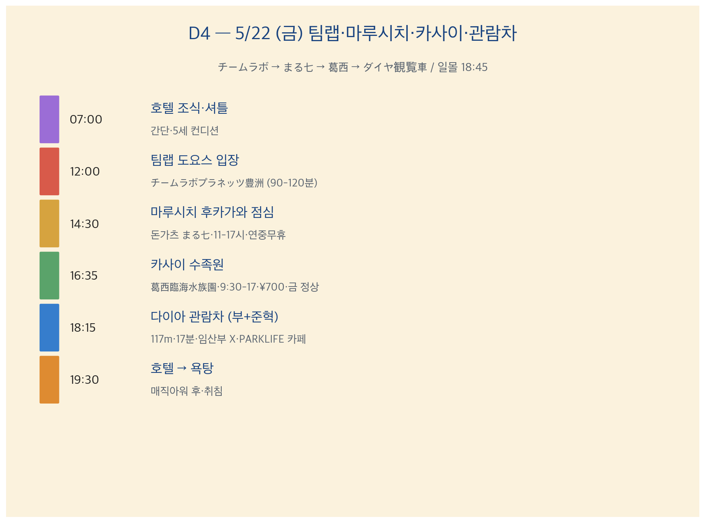
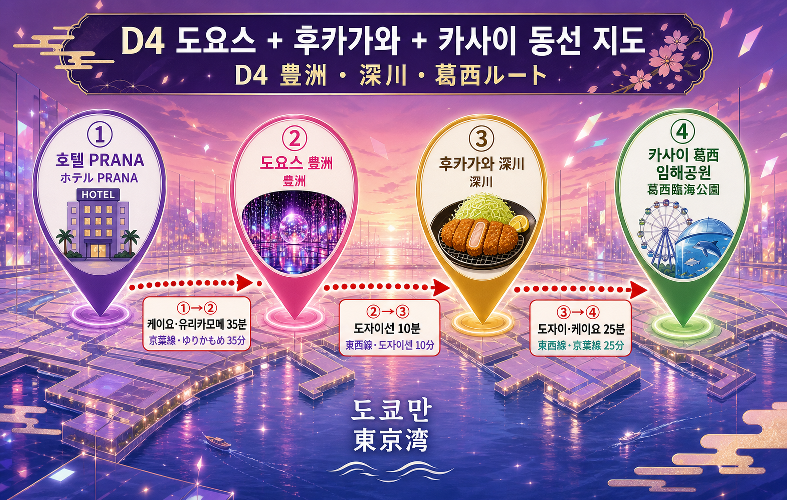
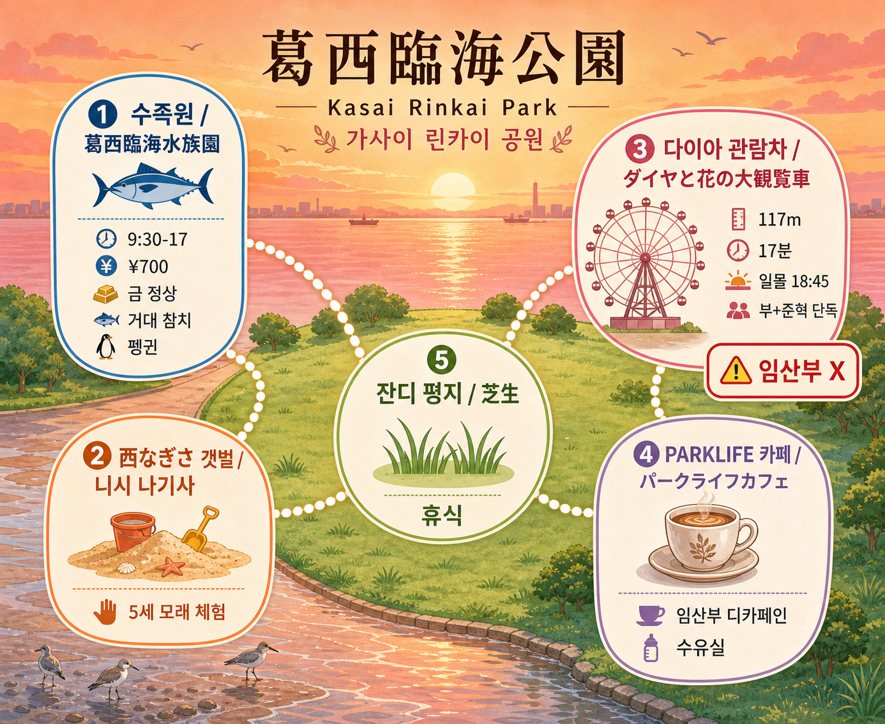

D4 — 5월 22일 (금) 팀랩 (チームラボ·치-무라보·teamLab) + 카사이 (葛西·카사이) + 관람차 (大観覧車·다이칸란샤)
D4 — 5월 22일 (금) 팀랩 (チームラボ·치-무라보·teamLab) + 카사이 (葛西·카사이) + 관람차 (大観覧車·다이칸란샤)
チームラボ プラネッツ 豊洲 (치-무라보 푸라넷츠 토요스·teamLab Planets Toyosu) 12:00 / まる七 (마루시치·Maru Shichi) 후카가와 후도점 점심 / 葛西臨海公園 (카사이 린카이 코우엔·Kasai Rinkai Park·수족원 16:35) / ダイヤと花の大観覧車 (다이아토 하나노 다이칸란샤·Diamond & Flower Ferris Wheel) 18:15 / 일몰 18:45
가족 3명 (수억·아람·준혁) / 임산부 16주 + 5세
① 그날 요약
D4 = 체험 + 자연 + 도쿄만 일몰 풀데이 · 메인 = ① チームラボ プラネッツ 12:00 (90-120분·맨발·수분·갈아입을 옷 의무) ② まる七 (마루시치·정통 돈가츠) 후카가와 후도점 (深川不動·후카가와 후도) 점심 ③ 葛西臨海水族園 (카사이 린카이 스이조쿠엔·Kasai Sea Life Park) 16:35 (압축 25분·거대 참치·펭귄) ④ 西なぎさ (니시 나기사·서쪽 모래사장) 갯벌 ⑤ ダイヤと花の大観覧車 (다이아 관람차) 18:15 (117m·17분·임산부 X·부+준혁 단독·임산부 PARKLIFE 카페 분리 슬롯). 일몰 18:45 정점 (timeanddate.com 검증). 임산부 분리 슬롯 5 카드 (A1-A5) = D4 핵심 운영 룰.

6 슬롯 흐름 = 호텔 → 팀랩 → 마루시치 → 카사이 → 관람차 (임산부 PARKLIFE) → 호텔
② 동선
호텔 → 마이하마역 (舞浜駅·Maihama Station) → JR 京葉線 (케이요센·Keiyo Line) + ゆりかもめ (유리카모메·Yurikamome Line) 35분 → 豊洲駅 (토요스·Toyosu Station) → 팀랩. 점심 = 도자이선 (東西線·토자이센·Tozai Line) 후카가와. 오후 = 도자이·케이요선 葛西臨海公園 (카사이 린카이 코우엔). 일몰 + 관람차 (임산부 PARKLIFE 카페 분리). 귀로 = 카사이 → 마이하마 → 호텔.

🌐 인터랙티브 동선 지도: D4_folium.html — 12 핀 + 임산부 분리 슬롯 핑크 마킹 (호텔·마이하마·도요스·팀랩·후카가와 후도·마루시치·카사이 임해공원·수족원·서나기사·관람차·PARKLIFE 카페·일몰 지점).
🗺️ 핵심 지점 구글맵: - 豊洲駅 (토요스역·Toyosu Station) - チームラボ プラネッツ 豊洲 (teamLab Planets Toyosu) - 深川不動 (후카가와 후도·Fukagawa Fudo) - まる七 후카가와 후도점 (Maru Shichi Fukagawa Fudo) - 葛西臨海公園 (Kasai Rinkai Park) - 葛西臨海水族園 (Kasai Sea Life Park) - ダイヤと花の大観覧車 (Diamond & Flower Ferris Wheel) - 동선 = 호텔 → 토요스 (transit) - 동선 = 도요스 → 후카가와 후도 (transit) - 동선 = 후카가와 → 카사이 임해공원 (transit)
③ 시간순 일정 (메인)
07:00-09:00 · 호텔 조식·새벽 욕탕·셔틀 준비
- 07:00-07:30 호텔 7F 大浴場 (다이요쿠죠·큰 욕탕) 임산부 새벽 단독 슬롯 (인적 가장 한산·ぬるめ 41°C 이하 10분)
- 07:30-08:30 호텔 1F 조식 (양식·일식 풀)
- 08:30-09:00 객실 짐 정리 (베비카·갈아입을 옷 1세트 풀·비닐 2-3장 의무·물 2개·간식·우비)
일본어 1줄 (조식)
| 한국어 | 일본어 | 발음 |
|---|---|---|
| 임산부용 메뉴 있나요? | 妊婦 用 メニュー ありますか? | 닌푸요우 메뉴- 아리마스카? |
| 디카페인 커피 있나요? | ディカフェイン の コーヒー ありますか? | 데카훼인노 코-히- 아리마스카? |
09:00-10:30 · 호텔 → 마이하마 → 토요스 (豊洲)
- 09:00-09:20 호텔 무료 셔틀 → 마이하마역 (15분)
- 09:20-09:50 JR 京葉線 (케이요선) 마이하마 → 신키바 (新木場·신키바·Shin-Kiba) 15분
- 09:50-10:00 신키바 환승 → ゆりかもめ (유리카모메·Yurikamome Line) 또는 도쿄메트로 有楽町線 (유라쿠초센·Yurakucho Line) 토요스 방향
- 10:00-10:30 토요스역 도착·LaLaport 豊洲 (라라포-토 토요스·LaLaport Toyosu) 가벼운 휴식·간식 (5세 11:00 사과·견과·시리얼바 = 12:00-14:00 견딤 보장)
일본어 1줄 (전철)
| 한국어 | 일본어 | 발음 |
|---|---|---|
| 토요스역까지 | 豊洲駅 まで | 토요스 에키 마데 |
| 유리카모메 어디예요? | ゆりかもめ どこ ですか? | 유리카모메 도코데스카? |
10:30-12:00 · LaLaport 豊洲 + 팀랩 도착·맨발 준비
- 10:30-11:30 LaLaport 豊洲 (5세 자유 시간·임산부 휴식·간식)
- 11:30-12:00 팀랩 도착 (LaLaport에서 도보 5-7분) → 사물함 (무료) + 베비카 입구 보관 (의무) + 맨발 준비
임산부 분리 슬롯 A1 사전 안내: 입구 캐스트에 일본어로 안내 받기.
일본어 1줄 (팀랩 입구)
| 한국어 | 일본어 | 발음 |
|---|---|---|
| 임산부인데 어떤 룸이 OK인가요? | 妊娠中 ですが、どの 部屋 が OK ですか? | 닌신추데스가·도노 헤야가 오케데스카? |
| 베비카 보관 어디예요? | ベビーカー 預け どこ ですか? | 베비카- 아즈케 도코데스카? |
| 사물함 무료인가요? | ロッカー 無料 ですか? | 롯카- 무료-데스카? |
12:00-14:00 · ⭐ チームラボ プラネッツ 豊洲 (치-무라보 푸라넷츠 토요스·teamLab Planets Toyosu) 풀체험
무엇?: 디지털 아트 뮤지엄 (体感型 (타이칸가타·체감형) アートミュージアム·아-토 뮤-지아무·Art Museum). 7 룸 워크스루 (물 발 담그기·꽃 미러룸·낙수·잔디·꽃밭·인터랙티브 회화·출구). 2025년 1월 신규 어린이 영역 (Athletics Forest·Future Park) 추가. 맨발 진입·물 통과 의무.
| 항목 | 정보 |
|---|---|
| 입장 시간 | 12:00 (클룩 ₩96,000 락) |
| 소요 | 90-120분 |
| 운영 | 8:30-22:00·마지막 입장 21:00 |
| 베비카 | ❌ 입구 보관 의무 |
| 재입장 | ❌ |
| 사물함 | 무료 |
| 갈아입을 옷 | 5세·임산부 1세트 의무 (수분) |
| 임산부 일부 룸 | ❌ 회피 (현장 스태프 안내) |
| 5세 본인 요금 | ✅ 5세 = 어린이 (3세 미만 무료) |
임산부 분리 슬롯 A1 — 팀랩 룸별 안내
| 룸 | 일본어 | 임산부 | 5세 | 비고 |
|---|---|---|---|---|
| ① 물 발 담그기 | 水につかる (미즈니 츠카루) | ❌ 회피 | ⭐⭐⭐⭐⭐ | 부+준혁 단독 |
| ② 꽃 미러룸 | 花の彫刻 (하나노 쵸-코쿠·Flower Sculpture) | ✅ | ⭐⭐⭐⭐ | – |
| ③ 낙수 (滝) | 滝 (타키·Waterfall) | ❌ 회피 | ⭐⭐⭐⭐ | 부+준혁 단독 |
| ④ 잔디·꽃밭 | 草間·花畑 (쿠사마·하나바타케·Grass·Flower Garden) | ✅ | ⭐⭐⭐⭐⭐ | 평지 |
| ⑤ 인터랙티브 회화 | お絵かき (오에카키·Drawing) | ✅ | ⭐⭐⭐ | 5세 그림 |
| ⑥ Athletics Forest·Future Park (5세 신규) | アスレチック·フューチャーパーク | ✅ | ⭐⭐⭐⭐⭐ | 2025/1 신규 |
| ⑦ 출구 매장 | – | ✅ | ⭐⭐⭐ | 굿즈 |
임산부 분리 룸 (① 물·③ 낙수) 운영 룰: 1. 입구 캐스트에 일본어로 알림 (위 일본어 1줄) 2. 부+준혁 = 룸 진입 (10-15분·5세 잭팟) 3. 임산부 = 옆 룸 또는 휴식 공간 대기 4. 합류 = 다음 룸 입구 약속
🔗 미리보기 (팀랩): - チームラボ プラネッツ 공식 (한국어) · 구글맵 - 팀랩 임산부 안내 공식 FAQ - 네이버 블로그 팀랩 플라네츠 5세 후기 - 네이버 블로그 팀랩 임산부 후기 - 유튜브 teamLab Planets 풀투어
14:00-14:30 · 토요스 → 후카가와 (深川) 이동
- 14:00-14:15 팀랩 출구·옷 갈아입기·짐 정리
- 14:15-14:30 도자이선 (東西線·토자이센·Tozai Line) 토요스 → 몬젠나카초 (門前仲町·몬젠나카초·Monzen-nakacho) 약 8분
일본어 1줄 (환승)
| 한국어 | 일본어 | 발음 |
|---|---|---|
| 몬젠나카초역까지 | 門前仲町駅 まで | 몬젠나카초- 에키 마데 |
14:30-16:00 · ⭐ まる七 (마루시치·Maru Shichi) 후카가와 후도점 (深川不動·Fukagawa Fudo) 점심 — 임산부 분리 슬롯 A2
무엇?: 후카가와 후도 (深川不動·후카가와 후도) 사찰 옆 정통 돈가츠 (とんかつ·톤카츠·Tonkatsu) 노포 분점. 연중무휴 11:00-17:00 (공식 인스타·자란·핫페퍼 검증).
| 항목 | 정보 |
|---|---|
| 주소 | 東京都 江東区 富岡 1-15-10 (도쿄토 코우토우쿠 토미오카 1-15-10) |
| 역·도보 | 몬젠나카초역 1번 출구 도보 5분 |
| 영업 | 11:00-17:00 연중무휴 (공식·D-Day 인스타 확인 권장) |
| 타베로그 | 3.4+ (확인 권장) |
| 메뉴 | 돈가츠 ¥1,500-3,000 추정 (인스타 메뉴 사진 또는 03-5621-9966 확인) |
| 5세 친화 | 키즈체어 (D-Day 확인) |
| 임산부 안전 | 완전 익힌 돼지·차슈·계란 완전 익힘 요청 |
임산부 분리 슬롯 A2: ✅ OK·완전 익힘 돈가츠·생달걀 X·회 메뉴 X.
시그니처 메뉴 (추정): - 톤카츠 정식 (とんかつ 定食·Tonkatsu Teishoku) ¥1,500-2,000 - 카츠동 (カツ丼·Katsudon) — 계란 완전 익힘 요청 - 5세 = 어린이 카츠 (キッズ カツ·Kids Katsu)
산책 보너스: 후카가와 후도 사찰 (深川不動·후카가와 후도·成田山 東京別院 深川不動堂·나리타산 토쿄 베츠인 후카가와 후도-도·Naritasan Tokyo Betsuin Fukagawa Fudo) = 매장 옆·산책 가능·5세 일본 사찰 결 흡수·임산부 평지.
일본어 1줄 (마루시치)
| 한국어 | 일본어 | 발음 |
|---|---|---|
| 임산부라서 차슈 잘 익혀 주세요 | 妊娠中 で、チャーシュー しっかり 焼いて お願いします | 닌신추데·챠-슈- 싯카리 야이테 오네가이시마스 |
| 계란 완전 익힘 부탁드립니다 | 卵 完全 火 通して ください | 타마고 칸젠 히 토오시테 쿠다사이 |
| 어린이 의자 있나요? | 子供 椅子 ありますか? | 코도모 이스 아리마스카? |
| 어린이 카츠 있나요? | キッズ カツ ありますか? | 킷즈 카츠 아리마스카? |
| 카드 결제 됩니까? | カード 払い できますか? | 카-도 바라이 데키마스카? |
🔗 미리보기 (마루시치 + 후카가와 후도): - 마루시치 후카가와 후도점 인스타 - 구글맵 (まる七 후카가와) - 후카가와 후도 사찰 공식 - 후카가와 후도 구글맵 - 네이버 블로그 마루시치 후카가와 후기 - 유튜브 후카가와 후도·돈가츠 영상
매장 전화 = 03-5621-9966 (D-1 5/21 영업 확인·메뉴·예약 정책 권장)
16:00-16:35 · 후카가와 → 카사이 (葛西) 이동 — 임산부 분리 슬롯 A3
- 16:00-16:35 도자이선 → 西船橋 (니시후나바시·Nishi-Funabashi) 환승 → JR 京葉線 (케이요선) 西船橋 → 葛西臨海公園 (카사이 임해공원) 약 35분
임산부 분리 슬롯 A3 = 평지 코스만·엘리베이터 사용: 환승 시 계단 회피·엘리베이터 풀.
16:35-17:00 · ⭐ 葛西臨海水族園 (카사이 린카이 스이조쿠엔·Kasai Sea Life Park) 압축
무엇?: 도쿄도 임해 공원 내 수족원. 거대 참치 회유 수조 (큐로마구로·クロマグロ·Kuromaguro·黒鮪) = 도쿄 명물·펭귄 (ペンギン·Penguin) 일본 최대급.
| 항목 | 정보 |
|---|---|
| 운영 | 9:30-17:00 |
| 매표 마감 | 16:00 (16:00 매표 후 입장 가능 여부 = 확인 못 함·03-3869-5152 또는 매표소) |
| 휴원 | 수요 |
| 5/22 (금) | ✅ 정상 운영 (도쿄동물원협회 공식 2026 계획) |
| 요금 | 어른 ¥700·중학생 ¥250·초등 이하 무료 |
| 베비카 | 티켓 오피스 보관·평지·엘리베이터 |
| 수유실 | mamaro 2F (공식 infant-care) |
카사이 임해공원 구조도

수족원·西なぎさ 갯벌·다이아 관람차·PARKLIFE 카페·잔디 평지 5 핀
압축 25분 코스 (5세·임산부 친화): 1. 거대 참치 회유 수조 (1F·5분) ⭐⭐⭐⭐⭐ 2. 펭귄 (2F·10분) ⭐⭐⭐⭐⭐ 3. 베비카·수유실 (2F mamaro) = 임산부 휴식 5-10분
일본어 1줄 (수족원)
| 한국어 | 일본어 | 발음 |
|---|---|---|
| 어른 1·어린이 무료 (3인) | 大人 1·子供 無料 (3人) | 오토나 이치마이·코도모 무료- |
| 수유실 어디예요? | 授乳室 どこ ですか? | 쥬뉴-시츠 도코데스카? |
| 16시 매표 후 입장 가능? | 16時 切符 締め切り 後 入場 できますか? | 쥬-로쿠지 킷푸 시메키리 고 뉴-죠 데키마스카? |
| 베비카 보관 어디? | ベビーカー 預け どこ ですか? | 베비카- 아즈케 도코데스카? |
🔗 미리보기 (카사이 수족원): - 카사이 수족원 공식 (한국어) - 구글맵 카사이 수족원 (평점 4.0+) - 수족원 infant-care 공식 - 네이버 블로그 카사이 수족원 5세 후기 - 유튜브 葛西臨海水族園 영상
매장 전화 = 03-3869-5152 (D-Day 매표 마감 후 입장 정책 확인 권장)
17:00-18:00 · 西なぎさ (니시 나기사·서쪽 모래사장) + 잔디 휴식
- 17:00-17:45 西なぎさ (니시 나기사·Nishi Nagisa) 갯벌 (渚橋·나기사바시·Nagisa Bridge 건너 도쿄만 갯벌·봄 게가 보임)
- 5세 모래 체험·옷 갈아입을 1세트 의무·비닐 2장 의무
- 임산부 평지 산책 OK
- 17:45-18:00 잔디 평지 휴식·간식·임산부 PARKLIFE 카페 자리 잡기
5/22 도쿄만 만조·간조 시간 = 확인 못 함·일본 기상청 또는 海上保安庁 (카이죠우 호우안초우·Japan Coast Guard) 사이트 D-Day 확인 (갯벌 베스트 = 간조 1-2시간 후·5/22 토 만조·간조 시각 의존).
일본어 1줄 (갯벌)
| 한국어 | 일본어 | 발음 |
|---|---|---|
| 모래 어디예요? | 砂浜 どこ ですか? | 스나하마 도코데스카? |
| 안내소 어디? | 案内所 どこ ですか? | 안나이쇼 도코데스카? |
🔗 미리보기 (서나기사): - 네이버 블로그 카사이 서나기사 갯벌 5세 후기 - 유튜브 西なぎさ 영상
18:15-18:35 · ⭐ ダイヤと花の大観覧車 (다이아토 하나노 다이칸란샤·Diamond & Flower Ferris Wheel) — 임산부 분리 슬롯 A4
무엇?: 일본 2위 대관람차 (117m·17분 1회전·1999년 개업·운영 = 泉陽興業株式会社·센요우 코우교우 카부시키 가이샤·Senyo Kogyo). 도쿄만 일몰 매직아워 정점.
| 항목 | 정보 |
|---|---|
| 높이 | 117m (일본 2위) |
| 소요 | 17분 1회전 |
| 운영시간 | 확인 못 함·D-Day 매표소 또는 03-3686-6911 |
| 요금 | 어른 ¥800·3-15세 ¥400 (확인 못 함·D-Day 확인 권장) |
| 결제 | 확인 못 함·D-Day 매표소 |
| 임산부 | ❌ X (117m 고소·롤링·가족 결정 락) |
| 베비카 | ❌ 입구 보관 (부+준혁만 탑승) |
임산부 분리 슬롯 A4 (D4 핵심 분리): - 부+준혁 단독 탑승 (5세 잭팟·일몰 정점) - 임산부 (아람) = 관람차 옆 PARKLIFE 카페 (パークライフ カフェ·Park Life Cafe) 디카페인 라테 + 수유실 (확인 못 함·매장 영업 D-Day 확인) = “엄마 단독 추억” 인사이트 ⭐⭐⭐⭐
5/22 도쿄 일몰 18:45:26 ✅ timeanddate.com 검증·관람차 위 또는 갯벌에서 일몰 정점 관람 가능.
일본어 1줄 (관람차 매표)
| 한국어 | 일본어 | 발음 |
|---|---|---|
| 어른 1·어린이 1 (2명) | 大人 1·子供 1 (2人) | 오토나 이치마이·코도모 이치마이 |
| 결제 어떻게? | 支払い 方法 ありますか? | 시하라이 호-호- 아리마스카? |
| 임산부는 탑승 X 맞나요? | 妊婦 は 乗車 X ですか? | 닌푸와 죠-샤 다메데스카? |
🔗 미리보기 (다이아 관람차): - Senyo Kogyo 공식 - 구글맵 다이아 관람차 - 네이버 블로그 카사이 관람차 일몰 후기 - 유튜브 ダイヤと花の大観覧車 일몰 영상
전화 = 03-3686-6911 (D-1 5/21 운영시간·요금·결제 정책 확인 권장)
PARKLIFE 카페 (임산부 분리 슬롯 A4 휴식)
무엇?: 카사이 임해공원 PARKLIFE 카페 = 디카페인 라테·간단 메뉴·수유실 (확인 못 함·D-Day 매장). 임산부 17분 단독 휴식 + 일몰 풍경.
일본어 1줄 (카페)
| 한국어 | 일본어 | 발음 |
|---|---|---|
| 디카페인 라테 1잔 | ディカフェ ラテ 1杯 | 디카훼 라테 잇파이 |
| 수유실 있나요? | 授乳室 ありますか? | 쥬뉴-시츠 아리마스카? |
18:35-19:30 · 매직아워 도쿄만 + 귀로 — 임산부 분리 슬롯 A5 합류
- 18:35-18:45 일몰 정점 (관람차 위 또는 갯벌)
- 18:45-18:55 부+준혁 관람차 하차 → 임산부 합류 (A5)
- 18:55-19:00 가족 합류·잔디 휴식·5세 갈아입을 옷
- 19:00-19:30 카사이임해공원역 → JR 京葉線 → 마이하마 → 호텔 셔틀
임산부 분리 슬롯 A5 합류 = 부+준혁 하차 후 임산부 합류·잔디 평지 산책.
19:30-21:30 · 호텔 욕탕·취침
- 19:30-20:00 호텔 도착·임산부 압박 양말 해제·5세 옷 갈아입기
- 20:00-21:00 호텔 7F 大浴場 (간단·임산부 ぬるめ 10분)
- 21:00-21:30 객실·취침
④ 별첨 자료
🚨 1. 사용자 컨펌·재확인 큐 (D-1 5/21·D-Day)
❶ D-1 사전 재확인 (5/21 호텔 도착 후)
| # | 항목 | 방법 |
|---|---|---|
| 1 | 다이아 관람차 운영시간·요금·결제 | 📞 03-3686-6911 또는 매표소 |
| 2 | 마루시치 5/22 영업 확정 | 인스타 @tonkatsu.07.fukagawa 또는 📞 03-5621-9966 |
| 3 | 마루시치 메뉴별 정확 가격 | 인스타 메뉴 사진 또는 D-Day 매장 |
| 4 | 5/22 도쿄만 만조·간조 시간 (갯벌 베스트) | 일본 기상청 또는 海上保安庁 |
| 5 | 수족원 16:00 매표 마감 후 16:35 입장 가능 | 📞 03-3869-5152 |
| 6 | PARKLIFE 카페 5/22 영업시간·디카페인 메뉴·수유실 | D-Day 카사이 임해공원 공식 |
| 7 | 팀랩 5/22 12:00 슬롯 클룩 바우처 QR 재확인 | 클룩 앱 |
❷ D-Day 현장 확인 (5/22)
| # | 항목 | 방법 |
|---|---|---|
| 1 | 팀랩 임산부 회피 룸 정확 위치 | 입구 캐스트 |
| 2 | 마루시치 키즈 메뉴·키즈체어 | 매장 점원 |
| 3 | 수족원 매표 마감 후 입장 정책 | 매표소 |
| 4 | 다이아 관람차 결제 방법 | 매표소 |
| 5 | PARKLIFE 카페 영업·디카페인 메뉴 | 매장 |
❸ 매장 점원 확인
| # | 항목 | 방법 |
|---|---|---|
| 1 | 팀랩 사물함·갈아입을 룸 | 입구 |
| 2 | 마루시치 알레르기 정보 | 매장 |
🔍 2. 1차 출처 검증
| 사실 | 검증 |
|---|---|
| 팀랩 5/22 12:00 슬롯 = 클룩 예약 완료 | ✅ 클룩 |
| 팀랩 운영 8:30-22:00·마지막 입장 21:00 | ✅ 공식 |
| 팀랩 임산부 일부 룸 X·5세 본인 요금 | ✅ 공식 FAQ |
| 마루시치 영업 11:00-17:00·연중무휴 | ✅ 공식 인스타·자란·핫페퍼 |
| 카사이 수족원 9:30-17:00·매표 16:00 마감·수요 휴원 | ✅ 도쿄동물원협회 공식 |
| 카사이 수족원 5/22 (금) 정상 | ✅ 공식 2026 계획 |
| 카사이 수족원 ¥700·초등 이하 무료·수유실 mamaro 2F | ✅ 공식 infant-care |
| 5/22 도쿄 일몰 18:45:26 | ✅ timeanddate.com |
| 관람차 117m·17분·일본 2위 | ✅ Senyo 공식 |
| 관람차 운영시간·요금 | ❌ 확인 못 함·D-1 03-3686-6911 |
| PARKLIFE 카페 영업시간·디카페인·수유실 | ❌ 확인 못 함·D-Day |
| 마루시치 메뉴별 정확 가격 | ❌ 확인 못 함·D-Day 인스타 또는 매장 |
| 5/22 도쿄만 만조·간조 시각 | ❌ 확인 못 함·D-Day 일본 기상청 |
🤰 3. 임산부 (아람) 안전 점검 + 분리 슬롯 5 카드
임산부 분리 슬롯 5 카드 (D4 핵심 운영 룰)
| 슬롯 | 시간 | 분리 내용 |
|---|---|---|
| A1 팀랩 룸 (물·낙수) | 12:00-14:00 | 일부 룸 X·부+준혁 단독 진입·임산부 옆 룸 또는 휴식 공간 |
| A2 마루시치 점심 | 14:30-16:00 | ✅ OK·완전 익힘 돈가츠·생달걀 X |
| A3 환승·수족원 계단 | 16:00-17:00 | 평지 코스만·엘리베이터·임산부 휠체어 옵션 |
| A4 관람차 117m | 18:15-18:35 | ❌ X·부+준혁 단독 탑승·임산부 PARKLIFE 카페 디카페인·수유실·“엄마 단독 추억” |
| A5 갯벌 합류 | 18:55-19:00 | 부+준혁 하차·임산부 합류·잔디 평지 휴식 |
페이스 룰: 휠체어 옵션 (확인 못 함·D-Day 카사이 임해공원 안내소)·압박 양말·물 600ml.
안전 6 카테고리
| 카테고리 | 결과 |
|---|---|
| 낙상 | ✅ 평지·팀랩 일부 룸 회피·관람차 X |
| 충격·진동 | ✅ 워크스루·도자이선·케이요선 정시 |
| 고열 | ✅ 5월 평년·갯벌 자연 바람 |
| 균형 | ✅ |
| 식이 | ✅ 마루시치 완전 익힘 돈가츠·생달걀 X·PARKLIFE 디카페인 |
| 격렬도 | ✅ 분리 슬롯 5 카드 = 임산부 페이스 보호 |
👶 4. 5세 (준혁) 페이스·잭팟
| 슬롯 | 평가 |
|---|---|
| 팀랩 90-120분 | ⭐⭐⭐⭐⭐ 물·꽃·인터랙티브·신규 어린이 영역 |
| 마루시치 점심 | ⭐⭐⭐⭐ 돈가츠 5세 친화 |
| 수족원 25분 | ⭐⭐⭐⭐⭐ 거대 참치·펭귄 |
| 갯벌 45분 | ⭐⭐⭐⭐⭐ 모래 체험·봄 게 |
| 관람차 17분 (부자 단독) | ⭐⭐⭐⭐⭐ 일몰·도쿄만 |
| 일몰 매직아워 | ⭐⭐⭐⭐ |
🚼 5. 베비카·휠체어 동선
| 구간 | 권장 |
|---|---|
| 호텔·역·환승 | 베비카 OK·엘리베이터 |
| 팀랩 | ❌ 입구 보관 의무 |
| 마루시치 | OK 옆에 보관 |
| 수족원·갯벌 | OK 평지 |
| 관람차 | ❌ 입구 보관 (부+준혁만 탑승) |
| PARKLIFE 카페 | OK 옆에 보관 |
🚻 6. 화장실 매핑
| 슬롯 | 위치 |
|---|---|
| 호텔·역 | 풀 |
| 팀랩 | 입구·다목적 |
| 마루시치 | 매장 내 |
| 후카가와 후도 사찰 | 경내·기저귀대 풀 |
| 수족원 | 1F·2F·다목적·수유실 mamaro 2F |
| 갯벌 | 西なぎさ 안내소 옆 |
| 관람차 | 매표소 옆 |
| PARKLIFE 카페 | 매장 내 (확인 못 함) |
가족 룰 — “10분 전 룰”: 슬롯 시작 5분 전·끝 10분 전 = 가족 모두 화장실 사이클.
🎯 7. 변수 대비
| 변수 | 대응 |
|---|---|
| 우천 | 팀랩 수분 = 베비카 우비·5세 갈아입을 옷·수족원 실내·관람차 X (운휴 또는 안전 회피) |
| 5세 갯벌 옷 적시기 | 비닐 2장·갈아입을 옷 1세트 의무 |
| 관람차 운영 X | PARKLIFE 카페 디카페인·잔디 휴식만 (임산부 단독 슬롯 의미는 유지) |
| 임산부 부종 ↑ | PARKLIFE 카페 자리 잡기·관람차 단축·휠체어 |
| 만조·간조 X | 갯벌 시간 조정·잔디 평지만 |
| 수족원 매표 마감 후 입장 X | 갯벌·관람차로 시간 압축 |
| 마루시치 영업 X (인스타 미확인) | 후카가와 다른 식당 (大江戸 (오에도)·이마이 (今井) 등) |
| 팀랩 줄 길음 | 클룩 슬롯 = 입장 확정·이른 입장 가능 |
📦 8. 핸드캐리 (D4)
- 임산부 압박 양말·자외선차단제
- 준혁 갈아입을 옷 1세트 풀 (팀랩 수분·갯벌 모래)
- 준혁 캡 모자·물놀이 신발 (갯벌)
- 비상 간식 (5세·임산부·고열량 시리얼바 = 12:00-14:00 견딤 보장)
- 비닐 2-3장 (젖은 옷·갯벌)
- 마타니티 마크
- 보조 배터리 2개·일본 어댑터
- 물병 2개
- 5/22 도쿄만 만조·간조 메모 (D-Day 사전)
- 마루시치·관람차·수족원 전화번호 메모
🇯🇵 9. 일본어 핵심 문구 풀
| 한국어 | 일본어 | 발음 |
|---|---|---|
| 임산부입니다 | 妊婦 です | 닌푸데스 |
| 임산부인데 어떤 룸이 OK? | 妊娠中 ですが、どの 部屋 が OK ですか? | 닌신추데스가·도노 헤야가 오케데스카? |
| 베비카 보관 어디? | ベビーカー 預け どこ ですか? | 베비카- 아즈케 도코데스카? |
| 사물함 무료인가요? | ロッカー 無料 ですか? | 롯카- 무료-데스카? |
| 차슈 잘 익혀 주세요 | チャーシュー しっかり 焼いて お願いします | 챠-슈- 싯카리 야이테 오네가이시마스 |
| 계란 완전 익힘 부탁드립니다 | 卵 完全 火 通して ください | 타마고 칸젠 히 토오시테 쿠다사이 |
| 어린이 의자 있나요? | 子供 椅子 ありますか? | 코도모 이스 아리마스카? |
| 수유실 어디예요? | 授乳室 どこ ですか? | 쥬뉴-시츠 도코데스카? |
| 어른 1·어린이 1 (2명) | 大人 1·子供 1 (2人) | 오토나 이치마이·코도모 이치마이 |
| 디카페인 라테 1잔 | ディカフェ ラテ 1杯 | 디카훼 라테 잇파이 |
| 임산부는 탑승 X? | 妊婦 は 乗車 X ですか? | 닌푸와 죠-샤 다메데스카? |
| 16시 매표 후 입장 가능? | 16時 切符 締め切り 後 入場 できますか? | 쥬-로쿠지 킷푸 시메키리 고 뉴-죠 데키마스카? |
🗺️ 10. 구글맵·공식 URL
공식 사이트
구글맵 핀
동선 transit
전화번호
- 마루시치 후카가와 후도점: 03-5621-9966
- 카사이 수족원: 03-3869-5152
- 다이아 관람차: 03-3686-6911
후기·블로그·유튜브 풀
- 네이버 블로그 팀랩 플라네츠 5세 후기
- 네이버 블로그 팀랩 임산부 후기
- 네이버 블로그 마루시치 후카가와 돈가츠 후기
- 네이버 블로그 카사이 수족원 5세 후기
- 네이버 블로그 카사이 서나기사 갯벌
- 네이버 블로그 카사이 다이아 관람차 일몰
- 네이버 블로그 PARKLIFE 카페 후기
- 유튜브 teamLab Planets 풀투어
- 유튜브 ダイヤと花の大観覧車 일몰
- 유튜브 葛西臨海水族園
- 유튜브 後カガワ 후도 + 마루시치
💡 11. 가족 코멘트
“오늘의 메인 카드”: - 🌸 チームラボ プラネッツ 90-120분 = 물·꽃·인터랙티브·5세 잭팟 + 임산부 분리 슬롯 A1 (부분 회피) - 🐟 카사이 수족원 + 西なぎさ 갯벌 + 다이아 관람차 = 자연 + 도쿄만 일몰 풀데이 (일몰 18:45 정점) - ☕ A4 PARKLIFE 카페 디카페인 라테 = “엄마 단독 추억” 17분·수유실·임산부 만족도 ⭐⭐⭐⭐
“D4 컨셉”: > “체험 + 해변 = 임산부 분리 슬롯 5 카드 풀데이 = 가족 모두 잭팟 + 일몰 18:45 매직아워”
“임산부 분리 운영 핵심”: > “A1 팀랩 일부 룸 + A4 관람차 X = 부+준혁 단독 슬롯 = 가족 모두의 추억 + 임산부 단독 카페·휴식 = 균형 최적화”
⑤ 📚 자료·자세히 보기
약도·인터랙티브
{kind=link}
{kind=link}
{kind=link}
{kind=link}
{kind=link}
{kind=link}
{kind=link}
공식·1차 출처
한국어 후기 풀
유튜브 풀
전화번호 풀
- 마루시치 후카가와 후도점: 03-5621-9966
- 카사이 수족원: 03-3869-5152
- 다이아 관람차 (Senyo): 03-3686-6911
📅 작성: 2026-05-18 D-1 / 갱신: 2026-05-19 D-Day (v5 + 룰 31 풀세트·Naming·Map·Preview 3종 + 룰 28·29·30 적용·D1·D3 디자인 모방) / 가족 컨시어지